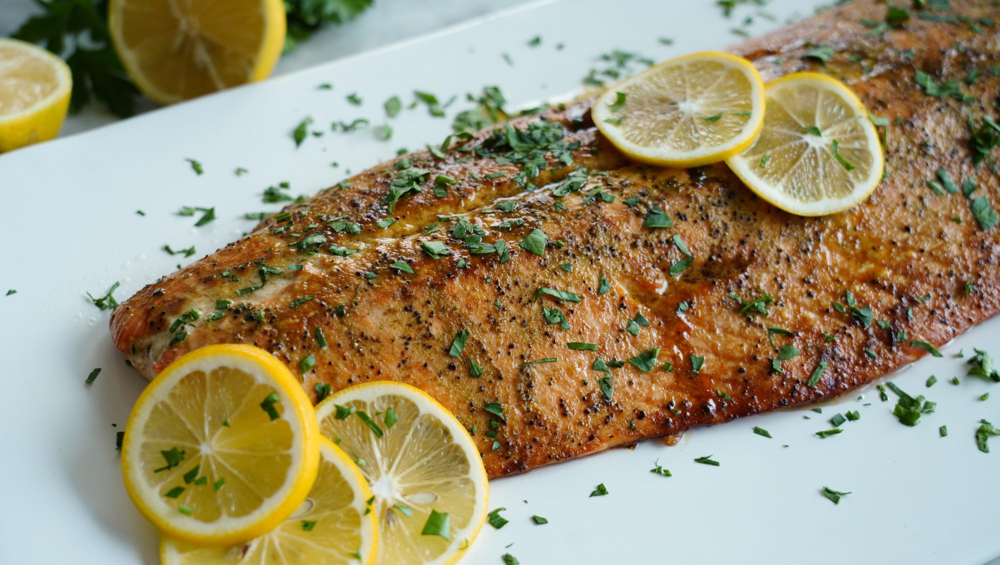

Roasted Salmon
Description
- Preparation time: 15 mins
- Cook: 20 mins
- Total: 35 mins
- Servings: 8
- Yield: 8 servings
Ingerdients
- nonstick cooking spray
- 2 tablespoons butter, softened, or more to taste
- 1 ½ tablespoons molasses
- 1 (2.5 pound) salmon fillet
- 1 tablespoon Greek seasoning (such as Cavender's®)
- 1 medium lemon, juiced, divided
Steps
- Preheat the oven to 425 degrees F (220 degrees C). Line a rimmed baking sheet with foil and spray with nonstick spray.
- Stir butter and molasses together in a small bowl.
- Lay salmon, skin-side down, on the prepared baking sheet. Spread butter mixture evenly over the salmon. Sprinkle with Greek seasoning and drizzle with ½ of the lemon juice.
- Roast in the preheated oven until salmon flakes easily with a fork, 17 to 20 minutes.
- Sprinkle with remaining lemon juice and serve.